The morning after the storm, he walks out of the fog onto the wrecked chapel shore, says 'We can rebuild this temple', and the white temple rises with his hands until he can welcome the new day with his arms open.


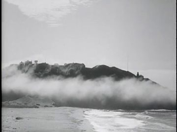

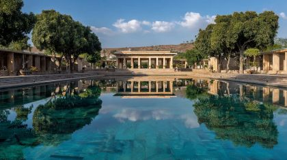
The poem
A poem of aftermath turned into a building. It opens cold and quiet ('Even here is chilly in the morning'): fog rafting in over the sea, hugging the bases of the tree-covered hills, choir chords calming 'the nerves of things I can't control', and a tired flame of 'jazz tuned lyrics' that dries the dew off 'all the remnants of the destruction revealed in the sunlight'. The ruin is the storm-wrecked chapel and shattered tambourine of earlier poems, now lit plainly.
It turns on 'We can rebuild this temple. It's a new day.', his first 'we' and the 2-second silence that follows it. After the turn, the grief is still named ('the painful crawl along the cobblestone boulevards of broken dreams'), but the poem moves into the journal 'stored away from moments of great clarity', into words 'read aloud and sung alone as gospels to the lonely mirror's midnight hours' and tears drying with time. It ends with the triple 'We can embrace / receive / welcome a new day' and 'this sacred place', the world and a heart at peace. Its governing images are fog, dew, sunlight, a white temple, a journal and a mirror.
Look
Cold flat overcast for 11.1, built from layers of vellum and tracing paper that thin out as dawn comes. Dawn arrives as a rose-to-gold gel card sliding up behind a cut ridgeline, then hard low sun cut through slits in black card throws real raking shadows across the white temple pieces. The temple is smooth bright-white card with a matte gesso skin and visible kraft edges. The chapel rubble is torn grey board flecked with pin-dot dew. Water is a sheet of silver-grey paper under a mirrored copy of the plate.
Our best elements
The strongest things we already have for this poem: generated footage, Atlantis views, found film and painted kit sheets.
Plate for shore_decaying_chapel (11.1a/b); the arched door is the archive surface
Figure-free, low-tide wet sand that already reflects the chapel, a storm sky; it is the exact ruin the poem returns to
P11-001 arrival: the motorcycle comes down to the shore, before any figure is seen
Pure fog, grey wet stone, two lamps. 'Chilly in the morning' with no figure to fight the puppet (crop the title text off the top)
11.1a far layer or answer to L02-L03
A literal picture of fog that 'hugs the bases of tree-covered hills' over a beach, in silver monochrome
P11-004 'remnants of the destruction revealed in the sunlight' (callback to poem 3)
Figure-free; a single shaft of light already falls on the debris, which is the line itself
Plate for the passage (L10) and for temple_infinity_pool
Figure-free, sunlit, a large bright pool edged in stone; the reflection is big enough for an archive picture to read

11.6a blue-hour or fog version of the finished temple; plate ref for temple_shore
White architecture floating on mirror-still water with a pale sun, which is 'heart at peace' as a place. Figure-free

11.2-11.3 the temple still 'assembling': the in-between state
Abstract white columns doubled in water; reads as the temple half-made, and it matches the card pieces
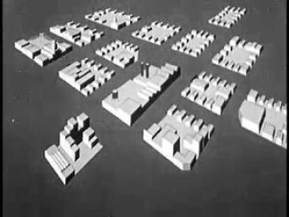
Answer to 'We can rebuild' / assemble_dissolve insert
Shows white models of building blocks seen from above, the same material logic as the cardboard temple kit

Opens between his card columns in 11.3b
Hard sun on tall white columns; it gives the vertical panes that read strongest
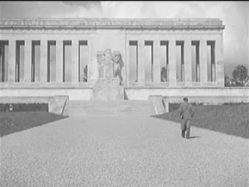
11.3a / 11.6c: the finished temple as remembered film
A lone figure walks up the axis toward a neoclassical temple front, POET's path in real film
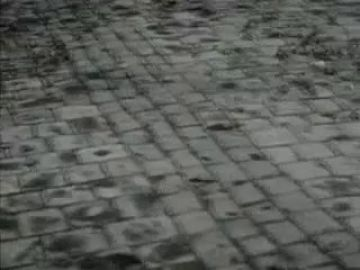
L12-L13 'painful crawl along the cobblestone boulevards'
Wet worn cobbles filmed close and low, the only exact match for the line
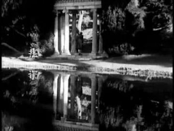
11.4/11.5 mirror_reflection; answer to 'lonely mirror's midnight hours'
A white columned rotunda doubled in black water; it is midnight mirror and temple in one frame
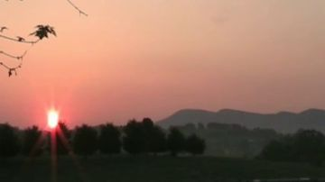
11.6b sun clearing the ridge, seen behind the card temple
Red sun on a dark ridge, simple silhouette shapes that sit cleanly behind cut card
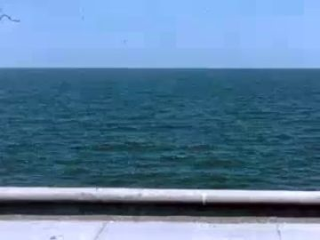
Plate or far layer for calm_sea (11.5)
Bright, flat, horizon-level sea with a white rail: calm, figure-free and bright enough to read
What we need
- A figure-free plate of the white temple standing on the sea shore with hills behind. view_052 is a palace in dry hills, and gen_69ee5bb28b is an island in fog
- Painted POET cards: every red_black_sunglasses pack and poet.11.action are still unpainted layout templates
- The 19-piece white temple kit (3 platform courses, 6 columns, 7 entablature blocks, 2 pediment slopes, 1 finial), each piece its own card
- Journal prop cards (closed, open with handwriting, page turning) and the pinch/grip hands that hold it
- Archive of a choir for 'choir chords calm the nerves'. No choir clip was found; search for a church choir rehearsal or gospel choir home movie
- A mirror for 'the lonely mirror's midnight hours' (a night-room mirror card). Nothing in the matches shows one
- POET's Magic Ride motorcycle as a parked card. The gen matches are motion blur, not the bike
- A bright, figure-free calm sea at morning for walking on water (gen_256de6281c has tiny figures and is murky)
Characters
POET kit →
The only figure: he arrives alone on the chilly shore, raises the temple with his palms, reads his journal at the pool, walks on the water and welcomes the day
Costume. red_black_sunglasses: black track jacket, high collar, red piping running from the shoulders down the chest; black track trousers; black Chelsea boots; black sunglasses as a separate plug-in card. Paint a few dew beads on the shoulders for 11.1, and lift the sunglasses (a pushed-up card on the brow) for the journal and the final welcome so his eyes are seen
Expressions. calm (mouth closed, brow soft), eyes closed on the out-breath, awe (lips parted, chin up), joy (open smile, arms up), reading aloud (mouth mid-word, eyes down), head lowered (crawl / tears drying)
Hands. in_pocket (both, 11.1a), flat_push(chapel_wall) R, flat_push palms-up(platform_course) both: the 'guiding' hand, open (arms raised), grip(journal) L, pinch(journal_page) R, palm flat on the pool coping (passage)
Cards to paint. threequarter head eyes-closed; profile head lowered; front head joy (open smile); head reading-aloud mouth; sunglasses card: on / pushed-up; palms-up flat_push pair; open hands L/R front; pinch(page) R; grip(journal) L; sit-at-edge legs (profile and threequarter); arms-raised front torso variant
poet.11.action is still a blank layout: panel A ('sit · threequarter, opens the journal') and all seven hand boxes are empty brad targets, and the props row has only grey placeholder chips. The WHO column is right (Black man, faded haircut, full beard, black track jacket with red piping, sunglasses). The C style strip shows the craft well (kraft hands with brass brads, piped boots), but its seated figure wears the sunglasses painted on, which goes against the pack rule that sunglasses are a plug-in card. It lacks the palms-up guiding hand and the arms-raised pose, which this poem needs most.
Its action sheet for this poem is on Character Kits v2.
open the action sheet →| action | beats | how the card does it |
|---|---|---|
| Palm on the first stone (passage, L10) | hand hangs loose at hip → lowers in one arc to the coping → lies flat, held through the line and the archive answer → fingers lift only after the picture closes | profile body; shoulder and elbow brads swing the forearm down; swap relaxed hand → flat_push card at contact; head card swaps calm → head-lowered at the hold |
| Guiding the stone | palms turn up at waist → rise slowly to chest → stone course rises dot by dot under them → palms stop; stone settles | threequarter body; both forearms on elbow brads raised by rods; palms-up flat_push cards; the platform_course card rides on a separate rod synced to the hands |
| Arms raised to the new day | small dip of the shoulders → both arms sweep up on the struck note → hold in a V → slow fall to open-at-sides | front body; upper arms on shoulder brads, open hands; head card swaps awe → joy smile at the top; chest card tilts back 3° |
| Sit and open the journal | journal under arm → sits at the pool lip → L grips the spine, R pinches the cover → cover swings open → hold, reading | sit pose from the replacements sheet; journal as 3 replacement cards (closed / half-open / open); pinch hand plugged to the cover card's brad |
| Walking on water | step → step with no ripple → he closes the journal mid-stride → one deep breath (chest card swells) → walks off frame | profile walk cycle on hip and knee brads; a still_water_halo disc rides under the feet; chest scale 100→103% on the breath |
| Breath in the fog | still → shoulders rise → long exhale as fog crosses his face → stillness | threequarter close head; eyes-closed replacement head; vellum fog strip slides across on the exhale |
Props
Sorted by priority. Each has its design, how to build it, the references found in the archive and our footage, and a prompt for its card sheet.
fallen grey stones of the decaying chapel, wet with dew, with the shattered tambourine from poem 3
torn grey board chunks 20-80 cm, layered in 3 depths; states: wet/dew, sunlit-dry; tambourine card: shattered ring + loose jingles
References found
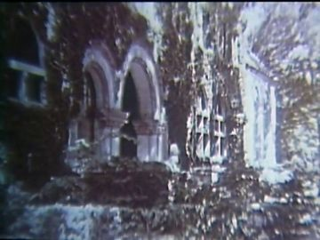
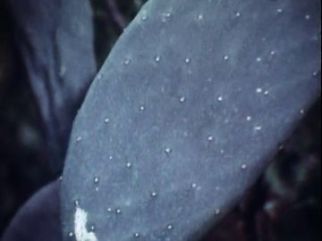
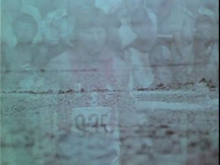

Generation prompt
Prop card sheet in the kit style: fallen grey chapel stones and a broken arch fragment as flat corrugated-cardboard cards, slate-grey gouache with confident ink line, raw kraft torn edges, flat-on even light, plain background; separate cards: stones wet with white dew dots, the same stones sunlit and dry, a shattered tambourine ring with three loose brass jingles
worn leather-bound journal with handwritten pages, 22 cm
brown leather card with stitched spine; states: closed, open (two pages of handwriting), page mid-turn (hinged on a brad), closed under arm
References found


Generation prompt
Prop card sheet in the kit style: a worn leather-bound journal as flat corrugated-cardboard cards, umber gouache with confident ink line, raw kraft cut edge, brass brad at the spine hinge, flat-on even light, plain background; separate cards for each state: closed front, open spread with handwritten lines, single page mid-turn, closed in side view to tuck under an arm
one long white stone course of the platform, held up by his palms in 11.2b
white card 600 cm in-world (~40 cm card); states: dot-stencil arriving 25/50/75%, settled, dew-beaded
References found
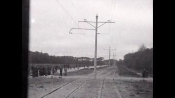
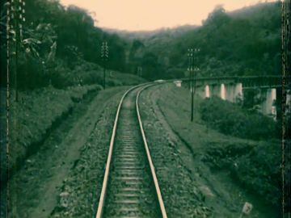
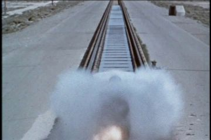
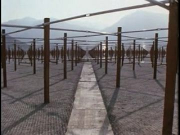
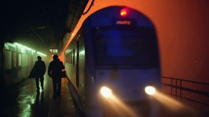

Generation prompt
Prop card sheet in the kit style: one long white stone platform course as a flat corrugated-cardboard card, matte white gouache, confident ink line, raw kraft cut edge, brass brad tab at each end, flat-on even light, plain background; separate cards for each state: arriving as dot-stencil 25%, 50%, 75%; whole and settled; whole with dew beads
the white stone edge of the reflecting pool where his palm lands in the passage
long white card strip with a soft shadow line; foreground occluder in front of the plate pool; states: dry, wet beside his hand
Generation prompt
Prop card sheet in the kit style: a long white stone pool coping as a flat corrugated-cardboard strip, matte white gouache with confident ink line, raw kraft cut edge, flat-on even light, plain background; separate cards: dry coping, coping with a wet dark patch, a short corner piece
futuristic white temple in 19 separate pieces: 3 platform courses, 6 columns, 7 entablature blocks, 2 pediment slopes, 1 finial
smooth white card with gesso skin and raw kraft edges; set scale ~1800 cm wide (card ~60 cm); each piece has states: absent / arriving (dot-stencil half revealed) / set; dew-beaded and dry versions of the platform
Generation prompt
Prop card sheet in the kit style: a futuristic white temple broken into 19 separate flat corrugated-cardboard cards, each laid out apart: three long platform courses, six plain cylindrical columns, seven entablature blocks, two pediment slopes, one finial; matte white gouache with confident ink line, raw kraft cut edges, brass brads at the joining tabs, flat-on even light, plain background; second row: the same three platform courses dotted with dew; third row: one column card half-revealed as a dot stencil (arriving state)
the lonely mirror of the midnight hours: a plain upright mirror in a night room
dark frame card with a silver-foil pane that the archive replaces; states: night (blue), morning (catching gold light)
Generation prompt
Prop card sheet in the kit style: a plain upright dressing mirror as a flat corrugated-cardboard card, dark frame in gouache with confident ink line, raw kraft cut edge, the glass left as flat pale silver, brass brads at the stand hinge, flat-on even light, plain background; separate cards: night state washed blue, morning state with a gold glint
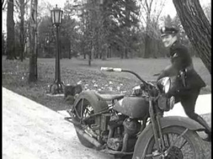
POET's motorcycle from Magic Ride, parked by the ruin
black card bike ~210 cm in-world, side profile; states: headlamp lit, headlamp off; kickstand down
References found
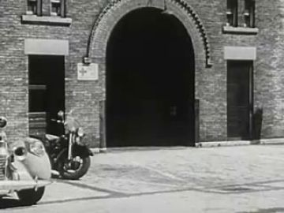

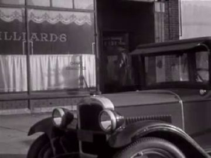


Generation prompt
Prop card sheet in the kit style: a parked black motorcycle in side profile as a flat corrugated-cardboard card, gouache with confident ink line and red accent piping, raw kraft cut edge, brass brads at the wheel hubs, flat-on even light, plain background; separate cards: headlamp lit with a pale glow, headlamp off
morning sun disc clearing the ridge
gold card disc 70 cm on a sky rod; states: below ridge (half), clear, haloed with cut rays
References found


Generation prompt
Prop card sheet in the kit style: a morning sun as a flat corrugated-cardboard disc, warm gold gouache with confident ink line, raw kraft cut edge, flat-on even light, plain background; separate cards: half disc behind a ridge line, full disc, disc with a ring of cut-paper rays
Places
shore_decaying_chapel
Cold low-tide shore at first light: the roofless chapel on wet sand, sea in the distance, wooded hills under a band of fog. Empty and hushed
Where the archive opens: the chapel's arched doorway (vertical, dark, central); the chapel's empty window slots; tide pools on the sand (faint; only for bright film)
References: our footage, Atlantis views, found film


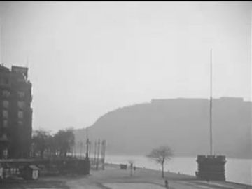
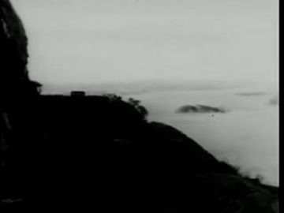
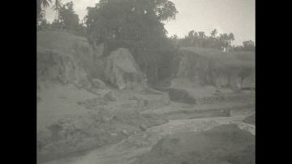
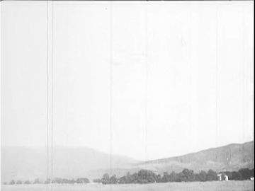
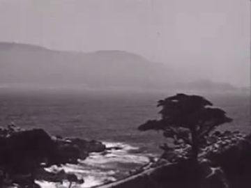
Generation prompt
Wide photographic plate, no people: a small roofless stone chapel standing on wet low-tide sand at first light, sea flat and pale in the distance, tree-covered hills behind wrapped at their base in a low band of fog, cold grey-blue overcast, wet sand reflecting the chapel, rubble scattered in the foreground, locked-off camera, 16:9
temple_shore
The same shore, now the building site: hills behind, sea in front, a clean white temple rising from the platform out. Dawn to full sun, then blue hour for the finial
Where the archive opens: the gaps between columns (tall vertical panes, best); the open doorway of the finished cella; the polished platform face (only in raking sun)
References: our footage, Atlantis views, found film


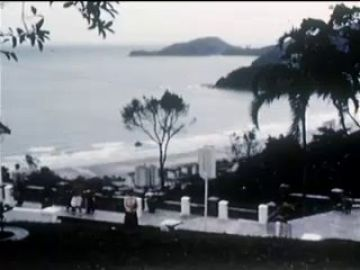
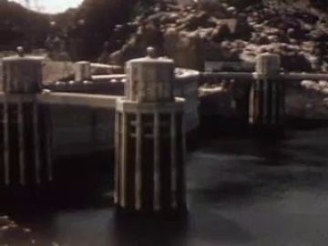
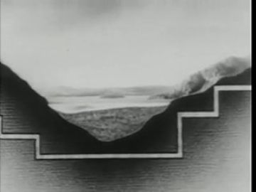
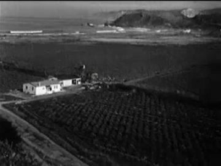
Generation prompt
Wide photographic plate, no people: an empty shoreline building site at dawn, a low white stone platform on the sand, calm sea in front, tree-covered hills behind with low fog at their feet, sun about to clear the ridge, cool shadows on the valley floor, clean minimal futuristic feeling, locked-off camera, 16:9
temple_infinity_pool
The temple's edgeless pool, a mirror of the whole sky. The surface is still enough to read in, and the sky is held whole underneath him
Where the archive opens: the pool reflection under the portico (large, bright: passage); the open journal page held close to camera; the portico's column gaps
References: our footage, Atlantis views, found film

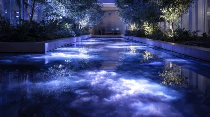
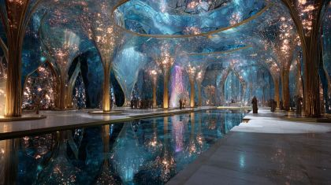
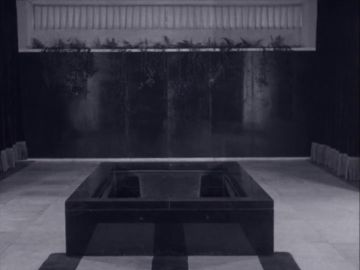

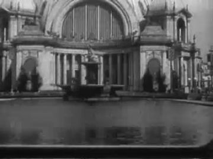
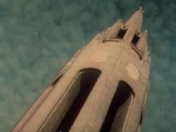
Generation prompt
Photographic plate, no people: a long white stone reflecting pool with no visible far edge, the water perfectly still and mirroring a pale morning sky and a white colonnade, white coping in the foreground, a few trees, soft clear sun, locked-off camera at waist height, 16:9
calm_sea
Open sea off the temple shore, flat and bright: he walks across it with a disc of stillness under his feet
Where the archive opens: the halo of still water under his feet (small, only for an insert); the sky-reflection band at the horizon
References: our footage, Atlantis views, found film
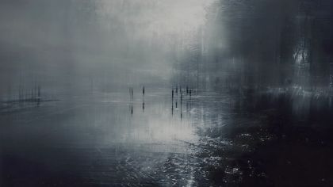


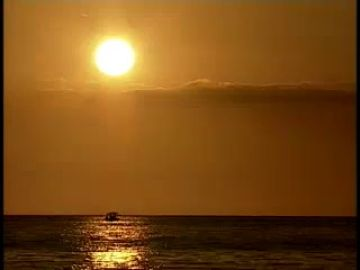
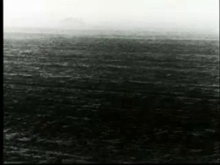
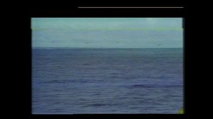

Generation prompt
Wide photographic plate, no people: an open calm sea in soft morning light, the surface glassy and bright with long low swells, a pale horizon and a few high clouds, a faint line of wooded shore at one edge, locked-off camera at eye height, 16:9
Effects
| effect | how, in this cut-out world |
|---|---|
| fog_drift | Three tracing-paper strips with feathered torn edges slide right-to-left at three speeds; under it, the arch_2723ab1b fog band as the far layer; strips thin and lift as dawn comes |
| dawn_from_horizon | Rose→gold gradient gel card rises behind a cut ridge silhouette; ambient key warms from grey to rose over 6 s (arch_0fcf01e8 Morning Mountain as reference or back layer) |
| recycled_air_wisps | Thin teased cotton or vellum curls on wires drifting slowly upward through the dawn light |
| assemble_dissolve | Each temple piece arrives as a dot-stencil: code reveals the white card through a dot mask in 4 steps, then a tiny settle (1-frame drop) and a puff of paper dust; intercut once with arch_3b66fbdb white block models |
| dew_drying | White pin-dot dew on the rubble cards fades out dot by dot along the line of sun; reference arch_ee425236 Victory Gardens dew on leaves |
| sun_rays | Slits cut in a black card in front of the key light, with haze; rays rake the white columns. Use arch_5e2737d2 Sunburst as the far sky |
| dew_winks | Three or four four-point star cards pop on and off for 2 frames each on the new white stone |
| mirror_reflection | Duplicate the plate and puppet flipped below a waterline card, darkened 20% and blurred slightly, with a gentle code ripple; the archive is comped into this reflection only |
| still_water_halo | A flat silver-paper disc slides under his feet and kills the ripple displacement inside its radius; it grows and shrinks with his breath |
| stars_out | Pinholes in a blue-hour card, backlit, go out one by one from the east; or arch_1ad86700 Snow Queen stars fading |
| terminator_sweep | A long shadow card slides off the valley floor westward, uncovering the lit set; the temple goes grey→bone-white as it passes |
The puppet passage
his line · 11_L10
“We can rebuild this temple.”
the archive answers · Fifteen Minutes in India (1960)
“Inside the temple, however, the stonework is severely plain.”
palm on a surface · water: the reflecting pool in front of the portico; the archive picture opens in the reflection, edged by the stone coping.
Keep. The line choice is right: 'We can rebuild this temple' is the turn and the first 'we'. The single held palm on the coping is a builder's touch and reads as one gesture. The literal answer from Fifteen Minutes in India (1960), 'the stonework is severely plain', matches the bone-white temple, and view_052 is figure-free with a large, bright pool.
Better. Water reads faint, so make the reflection fill the lower 45% of frame and push the archive bright, warm-tinted and nearly full-size in the pool, edged hard by the coping card. Let it also rise into the column gaps of the portico (vertical panes read strongest), so the picture appears in the pool and the colonnade together. Swap to a head-lowered card at the hold rather than tilting, and keep his hand still for the whole answer. Start the palm descent on 'rebuild' so the contact lands on 'temple'.
Other lines that could carry one:
- 'I can close a chapter and open a journal stored away': hand opens the journal; the archive (National Library of Medicine 1963, arch_496e705a) opens on the open page held close to camera
- 'along the cobblestone boulevards of broken dreams': head lowers; Berlin Symphony cobbles (arch_ea58bcc0) open in the arched doorway of the chapel ruin (gen_e315da34f9)
- 'sung alone as gospels to the lonely mirror's midnight hours': palm on glass of the mirror card; the archive opens inside the mirror pane (Golden Gate City rotunda in black water, arch_62e610f9)
- 'We can welcome a new day': both hands open, arms up; sunrise film (arch_b9159fe6) opens between the two centre columns of the finished temple
- 'This world is at peace': eyes-closed head on the out-breath; THE PHOTOGRAPHER fog headland (arch_2723ab1b) opens in the chapel window slot
Scene ideas
- Arrival without a body: the headlights in gen_efa9055be2 (title text cropped) come toward camera, then cut to the motorcycle card parked small on the flats of gen_e315da34f9, with POET's back card already standing at the water
- Fog that hugs: POET back card in the foreground and vellum fog strips in the middle; far layer is THE PHOTOGRAPHER 1948 headland fog (arch_2723ab1b), so the archive is the landscape he watches
- Remnants in the sun: hold on gen_2bd9f63a13 (shattered tambourine under a light shaft), then the light shaft widens and the dew pin-dots on the cardboard rubble dry along it
- Builder and blueprint: as his palms rise, How Our Country Grew (arch_3b66fbdb) white block models play inside the empty footprint of the platform; when it ends, the first white card course is there
- Colonnade walk: he walks behind six card columns; each gap shows a beat of World of Tomorrow (arch_715f6e36) or European Trip I (arch_1a29a53f), and each column hides him for a beat
- Choir chords: the robed figures walking into light in gen_8610c5199b stand as a standalone insert for 'offer them back to the higher powers' (no puppet in that frame)
- Walking on water: the calm sea of Happy Wanderers (arch_b687e341) with a silver halo under his profile walk cycle; on 'mirror's midnight hours' the water darkens to Golden Gate City's black pool (arch_62e610f9)
- Blue hour to sun: the finial lands under stars from The Snow Queen (arch_1ad86700); the stars go out, Rising Sun and Mountains (arch_b9159fe6) clears the cut ridge and the terminator sweep reaches his raised arms
References to look for
| what | where to look |
|---|---|
| Fog in layers for a lone figure | Yuri Norstein 'Hedgehog in the Fog' (multiplane vellum fog); Hiroshi Sugimoto Seascapes; Michael Kenna shoreline long exposures |
| Choir chords | archive: 'church choir rehearsal', 'gospel choir 1950s', 'Negro spirituals choir', 'Easter sunrise service' home movies and educational films |
| White temple and plain stone | Tadao Ando Church on the Water / Water Temple; Carlo Scarpa Brion pools; archive: 'World's Fair reflecting pool', 'memorial dedication', 'temple interior India 1960' |
| Building that assembles itself | archive: 'architectural model animation', 'stop motion bricks', 'masonry stone laying 1940s'; Jan Švankmajer object animation |
| Cut-paper figure in landscape | Lotte Reiniger silhouettes; Romare Bearden collages (The Block, Odysseus series) for the Black figure in a collaged world |
| Dawn and dew | archive: 'sunrise time-lapse 1950s', 'dew on leaves macro', 'morning mist over valley'; 2007 wide-screen nature stock (Morning Mountain, Rising Sun series) |
| Journal and night mirror | archive: 'diary handwriting close-up', 'reading by lamp'; Roy DeCarava interiors for low-key night rooms |
Our footage for this poem
The 20 generated clips and 8 Atlantis views closest to the poem (CLIP, image against its treatment and lines).


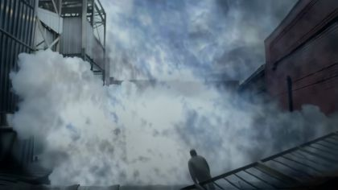


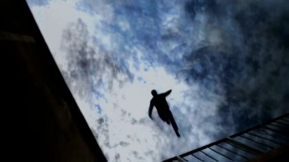


The kit
| status | kind | item | source |
|---|---|---|---|
| need | fx | Fog strips, dew dots, sun-ray slits, halo disc, star pinholes | paper + code |
| need | hand | Hands: in_pocket, flat_push(wall), palms-up guiding pair, open pair, grip(journal), pinch(page), flat palm on coping | hands template + poet.11.action hand boxes; to paint |
| need | head | POET heads: calm, eyes-closed, awe, joy, reading aloud, lowered; sunglasses on/pushed-up card | heads/face templates; to paint |
| need | prop | White temple kit, 19 pieces + arriving dot-stencil states | to generate (prompt above) |
| need | prop | Platform course card | to generate |
| need | prop | Journal (closed/open/turning) | to generate |
| need | prop | Pool coping strip | to generate |
| need | prop | Night mirror card | to generate |
| need | prop | Motorcycle (parked, lamp on/off) | to generate; check Magic Ride kit first |
| need | prop | Sun disc | code-drawn |
| need | set | Temple shore plate, figure-free, white temple by the sea | to generate (prompt in sets) |
| need | sound | Choir room tone / chords under L05-L06 | to find: choir rehearsal archive |
| partial | body | POET red_black_sunglasses body (front, threequarter, back, profile) | existing pack templates ../arena/parts/kit3/v2/packs/poet.red_black_sunglasses.body.*.jpg (unpainted) |
| partial | body | POET sit-at-edge pose | replacements template (sitting) + poet.11.action panel A; to paint |
| partial | prop | Chapel rubble + shattered tambourine cards | gen_2bd9f63a13 as reference; to generate cards |
| partial | set | Calm sea plate | assets/arch_b687e341-d085.jpg or to generate |
| have | fx | Archive answers: fog headland, white blocks, colonnades, cobbles, sunrise | arch_2723ab1b, arch_3b66fbdb, arch_715f6e36, arch_1a29a53f, arch_ea58bcc0, arch_b9159fe6 |
| have | set | Shore chapel plate | assets/gen_e315da34f9.jpg |
| have | set | Temple pool plate | assets/view_052.jpg |